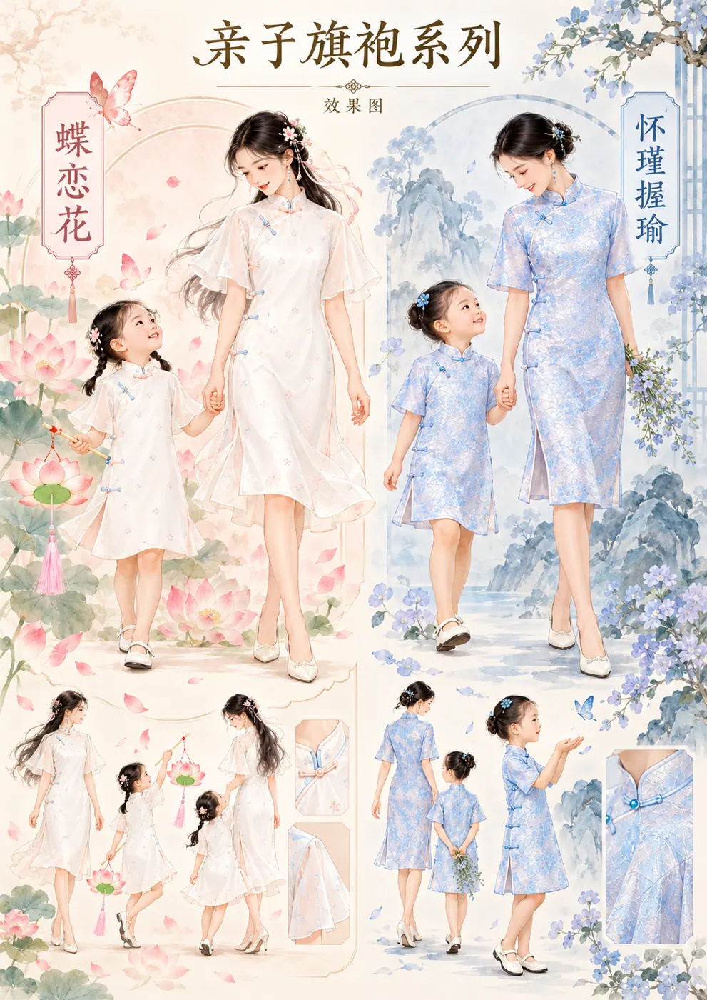
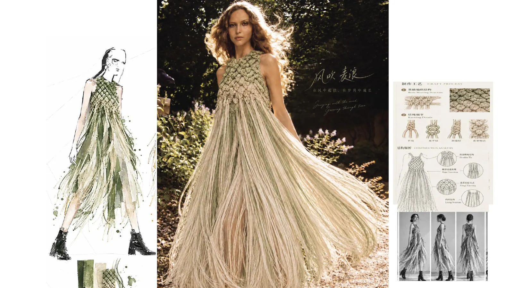
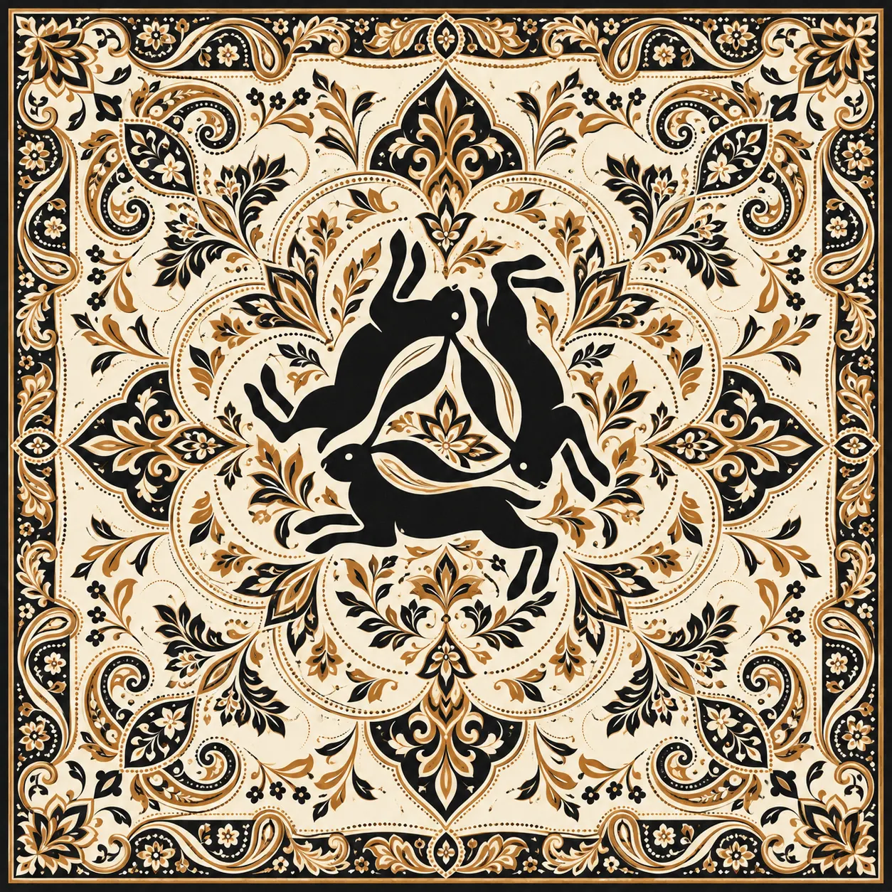

AN INDEPENDENT CREATIVE PORTFOLIO
Make
Ideas Visible.
王秋娜 · 个人作品与创意档案
从服装设计出发，连接品牌经营、商业策划、文化创意与 AI 数字实践。让审美落地，让想法发生。
EXPLORE MY WORLD ↗16+YEARS EXPERIENCE
04CREATIVE FIELDS
∞WAYS TO CREATE
A LIFE IN CREATIVE PRACTICE NO. 01 — 2026
✿
MY PHILOSOPHYStay curious.
Keep creating.Design is a way
of seeing the world.
Keep creating.Design is a way
of seeing the world.



CREATIVE
diary
diary
WQ
EST. 2026
EST. 2026
FASHION · COMMERCE · CULTURE · AI
01 / SELECTED PROJECTS
Collected
Stories.
设计、商业与数字创作的阶段性成果 · 点击卡片查看完整项目
02 / CREATIVE FIELDS
Different worlds,
one perspective.
01 / FASHION
服装与材料
服装设计、面料与纹样研究、立体裁剪、系列开发与造型表达。
02 / BRAND
品牌与商业
品牌经营、实体零售、商品企划、商业活动与生活方式空间策划。
03 / AI & DIGITAL
AI数字创作
AI漫剧资产、新闻内容编辑、AI网页制作、智能助手与数字视觉。
04 / EDUCATION
教育与文化
服装设计教学、传统服饰文化、儿童服装教育与课程研究。
03 / A LITTLE ABOUT ME
Curious
by nature.
“让设计连接生活，
让经验拥抱新的可能。”
让经验拥抱新的可能。”
从设计到商业，从实体零售到数字创作。
毕业于北京服装学院服装与服饰专业，拥有16年服装品牌经营、实体商业运营及团队管理经验。长期关注服装设计、品牌定位、消费体验、文化创意以及 AI 在创作与商业场景中的应用。
我相信跨领域的经验能够产生新的连接，也持续通过真实项目学习、实践和记录。
WANG
QIUNACREATIVE PORTFOLIO · 2026
QIUNACREATIVE PORTFOLIO · 2026